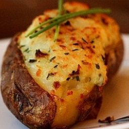

Servings: 12-16
Prep time: 30 minutes

Ingredients
- 8 baking potatoes, washed
- 3 tablespoons of canola oil
- 2 sticks of salted butter
- 1 cup of bacon bits
- 1 cup of sour cream
- 1 cup of sharp chedder chesser, grated. Extra for topping
- 1 cup of whole milk
- 2 teaspoons of seasoned salt
- 3 green onions
- Freshly ground pepper to taste
Instructions
- Preheat the oven to 400 degrees F
- Place the potatoes on a baking sheet. Rub them with the canola oil and bake for 1 hour, making sure they're sufficiently cooked through.
- Slice the butter into pats. Place in a large mixing bowl and add the bacon bits and sour cream. Remove the potatoes from the oven. Lower the heat to 350 degrees F.
- With a sharp knife, cut each potato in half lengthwise. Scrape out the insides into the mixing bowl, being careful not to tear the shell. Leave a small rim of potato intact for support. Lay the hollowed out potato shells on a baking sheet.
- Smash the potatoes into the butter, bacon and sour cream. Add the cheese, milk, seasoned salt, green onions and black pepper to taste and mix together well. (IMPORTANT: If you plan to freeze the twice-baked potatoes, do NOT add the green onions.)
- Fill the potato shells with the filling. I like to fill the shells so they look abundant and heaping. Top each potato with a little more grated cheese and pop 'em in the oven until the potato is warmed through, 15 to 20 minutes.